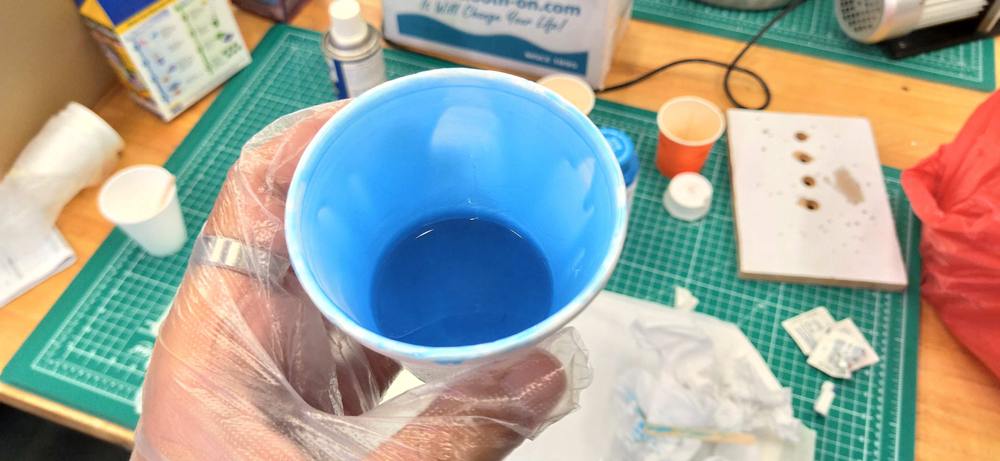

Molding and Casting
Assignments
For this section, there are two sections we have to do. Obviously we first have to design and create the mold and the we are going to use the mold for the cast.
Molding
For molding, we first have to create a design for the mold. For that i will use Fusion 360 ofcourse. Since i am not using molding and casting as part of my final project, i decided to create something simple, which is also because of time constraints. One of the requirements for this assignment is that we have to design something with a slope so that is exactly what i did and here is how it went.
Designing
For the design, i decided to just make a simple cone so to start, i just drew a simple circle of dimension 20mm, extrude it by 10mm and have the taper angle at -20 degress. Once that is done, i just created a base with the dimensions of 50x50 mm. I then extruded it by 5mm. After that is done, i designed the walls of the mold. I made it slanted so that the removal of the mold would be easier later on.


I then repeated it for each sides and extruded it, again, 50 by 50mm. The finished product should look like so.

Creating Toolpath
The designing portion is done. Now we want to produce the .nc so that we are able to cut using the CNC machine. To do that, all you have to do is firstly click on the "Design" and select "Manufacture". Next, just follow as the pictures shown below. Make sure to go from the left tab to right and from the top to bottom

Tool Settings
{kind=link}
Geometry For Cone
{kind=link}
Geometry For Cube

Passes Settings
When you're done, simply right click on the setup and click on Create a NC Program. Do the necessary settings such as renaming andselecting your save location and boom. You're done.

Cutting
After getting the .nc file, next is ofcouse the cutting part. Unlike cutting a PCB board, the process of cutting foam is way easier. For starters, we need our foam. Make sure that the size is minimum measurement is 50 by 50. Then, we just have to draw an 'X' so as to find the mid point of the foam. Once that is done, tape the foam on the sacrificial board like we did with the copper board for PCB. For the drill-bit, we will be using the flat end mill drill-bit. To set the XYZ axis, unlike the PCB method, for this we just have to set the drill-bit in the middle of the foam and have the bit on the foam. After that just set the axis to 0. After that just run.
{kind=link}
Finished Cut
After finishing the cut, we have to clean up the mold with a brush so that there isnt any tiny foam pieces when we use the silicone mold later on.
{kind=link}
Creating The Mold
{kind=link}
To create the mold, I used Mold Star 30. For the A:B mix volume, according to the technical overview table, it is a 1:1 ratio. To ensure a somewhat accuracy, I used a weighing scale. Based on the size of my mold, i measured about a 75:75 mix ratio more or less.

{kind=link}
{kind=link}
We then have to give a good mixing to the point where there is a constant colour. I then went ahead and place the mixture in a vacuum machine where the pressure inside the machine will decrease, removing any air trapped in the mixture. It takes a few minutes before i remove the mixture, where after i just poured it into the mold. Let it rest for a few hours, approximately 6 hours but as for me since i did it late into the afternoon on a Friday, i let it rest over the weekend and got back at it on Monday.
{kind=link}
{kind=link}
{kind=link}
Casting
On Monday, afther the silicone mold has rested, all i had to do was remove the foam. Though i did forget to spray on some releasing agent before pouring the silicone, it wasnt a problem for now but i made sure to remember to spray some when i pour on the resin. As for the foam, the removal process was easy. I just had to simply break it apart. The final mold looked as such.
Preparing Resin
For resin preparation, the process is similar. The only difference is the mix ratio. For the mix ratio it is 1 Hardener:3 Resin. So with proper measurements just like i did with the silicone, i mixed up the mixtures and put it in the vacuum machine for degassing. For this, the volume doesn't need alot as my mold is just the simple small cone.
{kind=link}
When all htat is done then ofcourse i went ahead and pour it into the mold. Ofcourse as mentioned before, i remembered to spray the releasing agent before pouring.
{kind=link}
I let it rest for a day and attended to it the next day. Taking it out was easy probably because of the releasing agent. It turned out better than expected. Below is the final product.